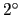
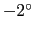

Next: Using the Spaceball in
Up: Using the Mouse in
Previous: Pick Modes
Contents
Index
Hot Keys
When the mouse is in the graphics window, many commands are
accessible via programmable hot keys. Hot keys allow you to do things
like change mouse modes or advance the animation by a frame by simply
pressing a key.
There are a number of predefined hot keys,
as listed in tables 5.1,
5.2, 5.3,
and 5.4.
They can be printed out with the command user print keys.
The commands listed are the text commands which are executed
when the hot key is pressed; these text commands are explained in
section 9.3.
To add or modify a hot key, use the command
user add key key command.
The key parameter must be a single character.
If command contains more than one word, it must be enclosed in
braces so that the subsequent command words are not ignored.
When that key is pressed while the mouse cursor is in the
graphics display window, the associated command will be executed.
Once you have a set of commands which are particularly
useful and familiar for you, you will want these
hot key commands automatically available every time you run VMD.
This can be done by placing the commands to add these items
in your .vmdrc file, which is a file containing VMD text
commands that is executed every time
VMD starts up.
The basic method for setting up this file is described
in section 14.3.3.
Once you have such a file, put the user add commands in it.
Table 5.1:
Mouse control hot keys.
| Hot Key |
Command |
Purpose |
| r, R |
mouse mode 0 0 |
enter rotate mode; stop rotation |
| t, T |
mouse mode 1 0 |
enter translate mode |
| s, S |
mouse mode 2 0 |
enter scaling mode |
| 0 |
mouse mode 4 0 |
query item |
| c |
mouse mode 4 1 |
assign rotation center |
| 1 |
mouse mode 4 2 |
pick atom |
| 2 |
mouse mode 4 3 |
pick bond (2 atoms) |
| 3 |
mouse mode 4 4 |
pick angle (3 atoms) |
| 4 |
mouse mode 4 5 |
pick dihedral (4 atoms) |
| 5 |
mouse mode 4 6 |
move atom |
| 6 |
mouse mode 4 7 |
move residue |
| 7 |
mouse mode 4 8 |
move fragment |
| 8 |
mouse mode 4 9 |
move molecule |
| 9 |
mouse mode 4 13 |
move highlighted rep |
| % |
mouse mode 4 10 |
apply force on atom |
|
|
mouse mode 4 11 |
apply force on residue |
| & |
mouse mode 4 12 |
apply force on fragment |
|
Table 5.2:
Rotation & scaling hot keys.
| Hot Key |
Command |
Purpose |
| x |
rock x by 1 -1 |
spin about x axis |
| X |
rock x by 1 70 |
rock about x axis |
| y |
rock y by 1 -1 |
spin about y axis |
| Y |
rock y by 1 70 |
rock about y axis |
| z |
rock z by 1 -1 |
spin about z axis |
| Z |
rock z by 1 70 |
rock about z axis |
| j, Cntl-n |
rotate x by 2 |
rotate 
about x |
| k, Cntl-p |
rotate x by -2 |
rotate

about x |
| l, Cntl-f |
rotate y by 2 |
rotate
about y |
| h, Cntl-b |
rotate y by -2 |
rotate
about y |
| g |
rotate z by 2 |
rotate
about z |
| G |
rotate z by -2 |
rotate
about z |
| Cntl-a |
scale by 1.1 |
enlarge 10 percent |
| Cntl-z |
scale by 0.9 |
shrink 10 percent |
|
Table 5.3:
Menu control hot keys.
| Hot Key |
Command |
Purpose |
| Alt-M |
menu main off;menu main on |
Show main menu |
| Alt-f |
menu files off;menu files on |
Show files menu |
| Alt-g |
menu graphics off;menu graphics on |
Show graphics menu |
| Alt-l |
menu labels off;menu labels on |
Show labels menu |
| Alt-r |
menu render off;menu render on |
Show render menu |
| Alt-d |
menu display off;menu display on |
Show display menu |
| Alt-c |
menu color off;menu color on |
Show color menu |
| Cntl-r |
display resetview |
Reset display |
| Alt-q |
quit confirm |
Quit VMD with confirmation |
| Alt-Q |
quit |
Quit VMD |
| Alt-h |
hyperref invert |
Invert hyper text mode (NOT help) |
|
Table 5.4:
Animation hot keys.
| Hot Key |
Command |
Purpose |
| +,f,F |
animate next |
move to next frame |
| -,b,B |
animate prev |
move to previous frame |
| .,> |
animate forward |
play animation forward |
| , |
animate reverse |
play animation reverse |
| < |
animate reverse |
play animation reverse |
| /, ? |
animate pause |
stop animation |
|
Next: Using the Spaceball in
Up: Using the Mouse in
Previous: Pick Modes
Contents
Index
vmd@ks.uiuc.edu